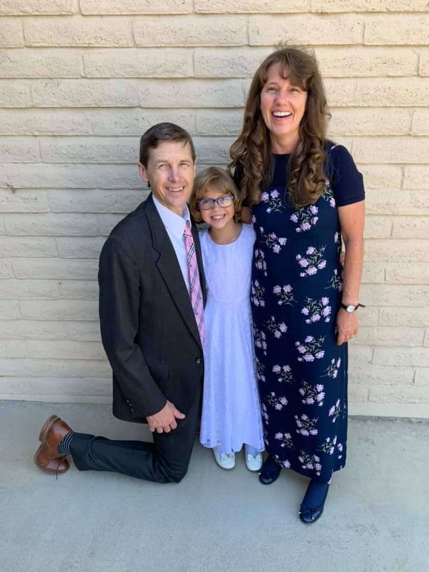
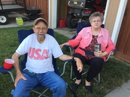

David is Called as Second Counselor in the Bishopric
December 12, 2021.David was called to serve as Second Counselor in his ward's bishopric. Gordon ordained him to be a High Priest and stood in the circle with his Stake President and other priesthood leaders to set him apart for his new calling.
We are pleased that David is a faithful member of The Church of Jesus Christ of Latter-day Saints and is worthy and willing to serve his ward members. This happend to be Gordon's 59th Birthday and he felt that ordaining his son to be a High Priest was the best birthday present ever.
Julie Spends a Day in Richfield with Friends

December 6, 2021. Julie traveled to Richfield with neighbors, Cheryl Levi, and Beth Spotten, to the Memorial Service of an old neighbor, Mark Berthelson, who passed away from a car accident on November 17th.

The three women served with Mark's wife, Janice, in 4-H and scouting, and became close friends. The Berthelson's left our area in 2006, but have managed to keep in touch over the years.
After the service, the women discovered a new restaurant, R & R Frontier Village, in Richfield. The food was good and the women had a great time celebrating Beth's 72nd birthday.
Jaxon & Shaylie both win their first basketball games of the season!

Saturday, December 4, 2021. Jaxon and Shaylie played their first basketball games of the season. Jaxon made two three point shots and two layups for a total of 10 of his teams' 22 points! Shaylie had several assists that helped her team win. Congratulations to our star athletes!
Olivia Shines at Her Dance Recital

December 1, 2021. Olivia performed beautifully in her Christmas dance recital held at the Payson High School. Olivia is a true showgirl; she had the biggest smile on stage!
Derek & Logan did a great job supporting their sister and Derek was ready with a few jokes to keep us all entertained after the show.
We Say Goodbye to Our Friend, Jerry Orton

November 6, 2021. Our beloved friend and adopted grandpa, Jerry Orton, passed away peacefully from complications of COVID-19 after saying goodbye to family and friends at Utah Valley Hospital.
We have been good friends with the Orton's since Gordon and Jerry served together in the bishopric many years ago. Jerry loved to work with wood and made us many items that we cherish.
The last thing Jerry told Gordon in the hospital before he passed away was, "I love you; you were the son I never had." He and Gordon worked together on many projects and Gordon feels like he has lost his best friend.